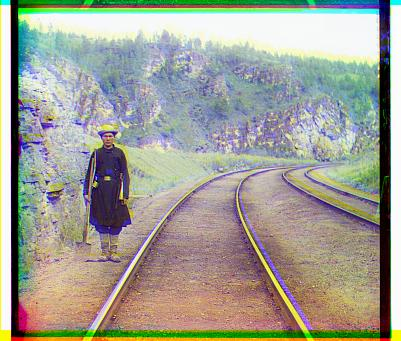
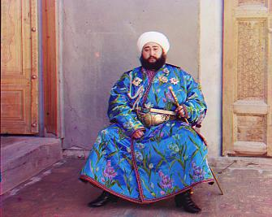

Introduction
Sergei Mikhailovich Prokudin-Gorskii (1863-1944)[1] [Сергей Михайлович Прокудин-Горский, in Russian] was a man well ahead of his time. The Prokudin-Gorskii collection consists of a sets of three black and white photographs captured using red, green, and blue filters. The objective of this project is to align these images and make one color image while minimizing visual artifacts.
My algorithm was successful in aligning all the images in the online Library of Congress data set. Above are the results.
Algorithm Overview
- 1. Extract 3 channels (BGR channels) from the input
- 2. Calculate two displacement vectors (xBG,yBG), (xRG,yRG) for aligning the B channel (first) and R channel (third) to the G channel (second), and shift them based on the displacement vector
- 3. border cropping
- 4. Color correction
- 5. Combine 3 channels together to compose a color image
Extract 3 channels (BGR channels) from the input
The proper translation offset from green to blue and red to blue needs to be calculated for alignment.In this step, I simply cropped 1/3 height for each channel.Compute Image Pyramids
An image pyramid is a collection of images - all arising from a single original image - that are successively downsampled until some desired stopping point is reached.This will be very efficient for searching the best align point.
Following the instruction on OpenCV doc, I used the matrix
to apply the algorithm. Every layer is 1/4 size of its parent layer. And I made the first layer size 16 * 16. The amount of layers is calculated by
Because each time we downsample an image, for one pixel, 8 pixels surrounding it will be dropped. Thus once we find the best pixel in one layer, we only need to search for 9 pixels in its parent layer to find the better pixel. Then the complexity of the algorithm is O(layernum*9*imgsize). In addition, if the size is under 1000*1000， I will make it search 5*5 pixels rather than 3*3 for better performance.
Time: for a jpg image, around 15s when using singlescale method. Using multi-scale method, the time is 0.5s.Unsharp Masks
Unsharp masks are created to emphasize the edges in the images.Image with unsharp masks can perform better in alignment tasks. Thus I used unsharp masks for each layer of the pyramids.
To weight the different displacement vector, I used SSD method. I also tried normalized cross correlation, but the former one is better.Image Alignment
After the two translation offsets (green to blue and red to blue) are computed, the image color channels are aligned into one color image.Automatic Cropping
After the alignment, there're always color bands on the border. I crop the image border for better results.The detail is explained below.Automatic Contrasting
After cropping, I improved the color using automatic contrasting. The detial is explained below.
Better Features: Unsharp Mask
Unsharp masking (USM) is an image sharpening technique, it emphasizes the edges in an image because the difference will be greater in areas with higher contrast. This increases the performance of the minimum sum of squared differences metric.[1][2]
Automatic Cropping
First step: crop the border after alignment
First, because of the offset of R G B during alignment, we need to first crop the lines that are not concatenated with both other 2 channels.
Second step: drop lines that using search
Next, we will turn the image to grayscale image, and search 10% of each side region, from border to center, calculating the average value of each single line, and crop the lines whose standard deviation is under 0.15(Magic number). If we meet over 3 lines whose std is above 0.15, then we consider them as the normal image lines, and break the procedure.
 |
|  |
Automatic Contrasting
After cropping, automatic contrasting is performed in order to correct the colors in the image.Following the instruction on Wikipedia, I first used Von Kries's method[3]. Convert the RGB image to LSM image[4][5], and then apply the scaling method.Then convert back.
However, this method is time-consuming, and the results are not so apparently improved(and not so natural).
Then I used another method, which is called "Lux" filter in "Instagram".[6] The basic idea is to use the histogram. We collect the 2% and 98% grey-value percentile, and solve two equation, then apply the scale on each pixel. The result are as follow:
 |
Extra Data
The algorithm generally performed well on other Prokudin-Gorskii images from the Library of Congress archive that were tested. Even most of the images with some damage were successfully aligned.
|  |
Source of Title Image
Giza, Pyramids of. [Photograph]. In Encyclopædia Britannica. Retrieved from http://www.britannica.com/EBchecked/media/108145/Pyramids-of-Giza-southwest-of-Cairo-Egypt